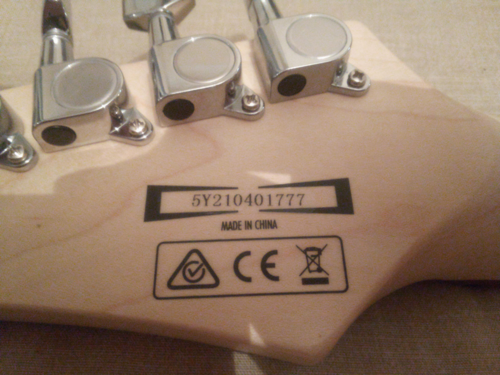

Founded in 1908 as Hoshino Gakki, a Japanese bookstore chain that began importing Spanish guitars, Ibanez has evolved into a premier manufacturer of guitars, basses, and amplifiers. Known for high-performance instruments favored by rock and metal artists, the company is renowned for its "lawsuit era" copies in the 1970s, which led to iconic original designs like the JEM, RG, and S series. (How to decode an Ibanez serial #)
Note: If you try a serial number and the decoder is not able to decode it, please contact us and let us know so we can check the number and fix the decoder. Thank you!
A quick manual method when you don't want to use a decoder.
Ibanez serial numbers are generally found on the back of the headstock and can be decoded by looking for a letter representing the factory (e.g., F = FujiGen, I = Indonesia, C = China) followed by two numbers for the year (e.g., F05 = 2005). Subsequent digits usually indicate the month and production number, with 2000+ models often using this format.
Decoding by Location & Year
Japan (FujiGen, 1987–Present): Starts with a letter, followed by 6–7 digits. The first two digits after the letter are the year (e.g., F97XXXX = 1997).
Japan (Post-2004 Monthly Codes): Uses a specific monthly breakdown, where the production number dictates the month (e.g., 00001–02999 = Nov, 03000–05999 = Dec).
Korea/Indonesia/China: Often use letters for the factory (e.g., C = China, I = Indonesia) followed by digits representing the year (2 digits) and month.
Older Models (Pre-1976): Often have no serial number.
Pedals: The first digit of a 4-digit serial number typically represents the last digit of the year (e.g., “3” = 1983).
Key Identification Clues
Letter Prefix: Identifies factory/origin (e.g., F/J = Japan, I = Indonesia, C = China, K = Korea).
First 2 Digits (Modern): Represent the year (e.g., 05 = 2005).
Online Tools: Check the Ibanez Wiki for the most comprehensive database.
If the serial number is missing or the guitar is from the mid‑70s, it may be necessary to check potentiometer codes or neck pocket stamps, as Ibanez did not consistently use serial numbers until 1976.

Example: headstock serial number.
Popular Kramer Guitars
Common Kramer models and series you might see on headstocks or listings.